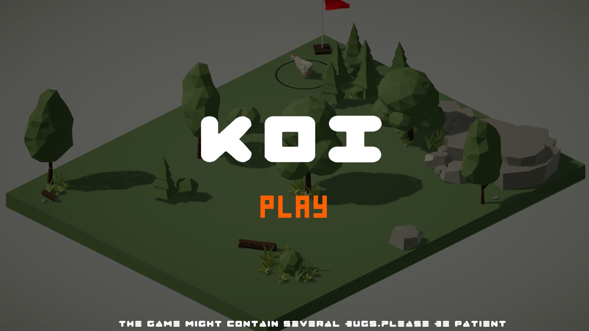
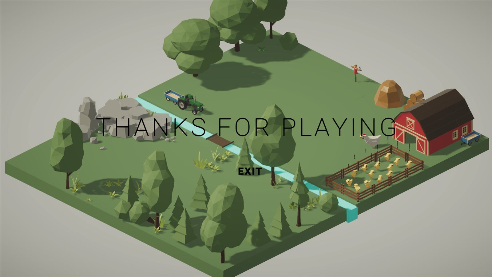

The rule the whole game is made of
Chicks follow the hen while they are inside her radius. Let one fall too far behind for too long and it resets to where the level started it. That is the entire failure state, and it is also the entire clock: every second you spend solving the far half of the puzzle is a second the near half is drifting out of range.
The second half of the design is the command. Standing close to a chick lets you lock it in place, or point at the ground and send it there. It is the only tool that lets you split the flock, which is the only way to cross a gap that will not take all of you at once. And it resets the chick after it executes. Every solution costs you the thing that made it possible.
A jam theme is usually a word you decorate a game with. The whole exercise here was to make Reset the load bearing rule instead: not a fail state, not a restart button, but the price attached to the only interesting verb in the game.


What a jam does to the code
A jam weekend means the follow behaviour, the radius test, the reset timer, the command state and the level flow all get written once and have to be right enough. The known bug is on the itch page in my own words: the move order is unreliable if you click on an object instead of on the ground. So is the line under the play button, which reads "the game might contain several bugs, please be patient". Shipping something honest and slightly broken beat shipping nothing, and it still does.
Credits
I was the sole programmer and designer. Arjun M Suresh did the level design. Liyons Varghese, Sundev Nallees and Nandhu S playtested. The itch page lists all five of us as the team, which is how a jam entry is normally credited.